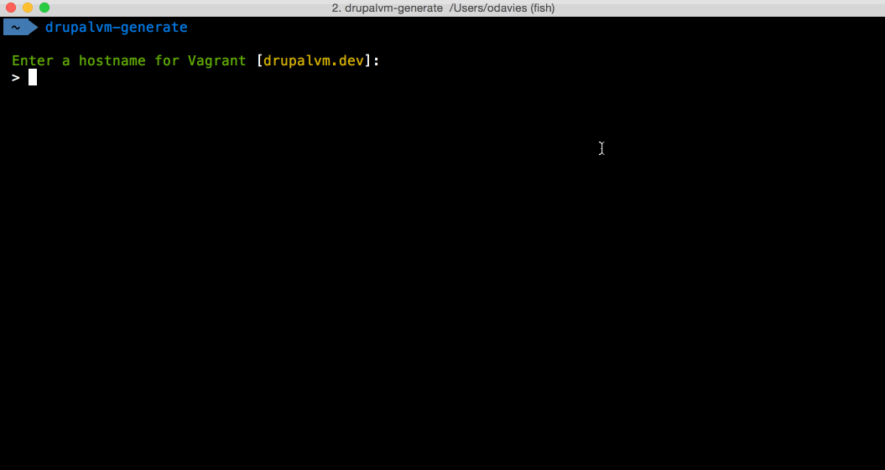

Drupal VM, Meet Symfony Console
Oliver Davies (opdavies)
- Senior Drupal Developer for Appnovation
- Symfony hobbyist
- Drupal VM user, Drupal VM Generator maintainer
- Drupal Bristol organiser, PHPSW co-organiser, DrupalCamp committee member

Prerequisites
- Object-orientated PHP
- Composer
- Autoloading, PSR-4
About Drupal VM
- Virtual machine for Drupal development
- Developed and maintained by Jeff Geerling
- Vagrant, Ansible
- Configured via YAML files
- Customisable
Using Drupal VM (< 3.0)
- Download the project
- Copy example.config.yml to config.yml
- Edit values
- Start the VM
Using Drupal VM (>= 3.0)
- Download the project
- default.config.yml contains default values
- Make config.yml if needed and override values
- Start the VM
About the Drupal VM Generator
- Symfony application
- Twig
- Generates minimal, use-case specific configuration files
- http://bit.ly/announcing-drupal-vm-generator
Using Drupal VM (>= 3.0)
- Download the project
- default.config.yml contains default values
- Make config.yml if needed and override values
- Start the VM
Drupal VM Generator Example 1
Drupal VM Generator Example 2
drupalvm config:generate \
--machine-name="drupalbristol" \
--hostname="drupalbristol.l" \
--ip-address="192.168.88.88" \
--cpus="1" --memory="512" \
--webserver="nginx" --drupal-version="8" \
--database-name="drupal" --database-user="drupal" \
--database-password="drupal" --build-makefile=false \
...
CLI Examples
- Drush
- Symfony/Drupal Console
- Terminus (Pantheon)/Platform.sh
- Artisan (Laravel)
- Composer
- Sculpin
CLI Examples
Drush- Symfony/Drupal Console
- Terminus (Pantheon)/Platform.sh
- Artisan (Laravel)
- Composer
- Sculpin
Symfony Console
The Console component eases the creation of beautiful and testable command line interfaces.
The Console component allows you to create command-line commands. Your console commands can be used for any recurring task, such as cronjobs, imports, or other batch jobs.
Installation
$ composer require symfony/console
$ composer install
Installation (cont)
# composer.json
"require": {
"symfony/console": "^3.1"
}
Installation (cont)
# app.php
require __DIR__ . '/vendor/autoload.php';
// Do stuff.
Building a Console Application
Steps
- Download the Console component
- Add an "entry point"
- Configure and run an
Applicationclass - Add new Commands
bin/drupalcamp
#!/usr/bin/env php
require __DIR__ . '/drupalcamp.php';
bin/drupalcamp.php
require __DIR__ . '/../vendor/autoload.php';
use Symfony\Component\Console\Application;
$application = new Application();
$application->run();
bin/drupalcamp.php (cont)
require __DIR__ . '/../vendor/autoload.php';
use Symfony\Component\Console\Application;
$application = new Application();
$application->run('DrupalCamps', '1.0');
Adding Commands
Adding Commands
- Add command classes in
src/ - Autoload via Composer
- Add to
Application
Autoloading via Composer
# composer.json
"autoload": {
"psr-4": {
"": "src/"
}
}
Autoloading via Composer
# composer.json
"autoload": {
"psr-4": {
"DrupalCamps\\": "src/"
}
}
src/GoCommand.php
use Symfony\Component\Console\Command\Command;
class GoCommand extends Command
{
public function configure()
{
$this->setName('go')
->setDescription('Go to a DrupalCamp.');
}
}
src/GoCommand.php (cont)
use Symfony\Component\Console\Input\InputInterface;
use Symfony\Component\Console\Output\OutputInterface;
...
public function execute(InputInterface $input, OutputInterface $output)
{
// Execute the command.
}
bin/drupalcamp.php
$application = new Application();
$application->add(new GoCommand());
$application->run();
bin/drupalcamp.php
$application = new Application();
$application->addCommands(
[
new GoCommand(),
]
);
$application->run();
Arguments and Options
src/GoCommand.php
use Symfony\Component\Console\Input\InputArgument;
...
public function configure()
{
$this->setName('go')
->setDescription('Go to a DrupalCamp')
->addArgument('name', InputArgument::OPTIONAL, 'Which DrupalCamp?')
->addOption('past', null, InputOption::VALUE_NONE);
}
src/GoCommand.php (cont)
public function execute(InputInterface $input, OutputInterface $output)
{
$text = $input->getArgument('name');
$past = $input->getOption('past');
...
}
Input and Output
InputInterface
$input->getArgument('foo');
$input->getOption('bar');
OutputInterface
$output->write($text);
$output->writeln($text);
OutputInterface
$output->write("$text ");
$output->write("$text ");
$output->write("$text ");
SymfonyStyle
- title
- section
- text
- comment
- note
- caution
- table
- ask
- askHidden
- confirm
- choice
- success
- error
- warning
SymfonyStyle
public function execute(InputInterface $input, OutputInterface $output)
{
$io = new SymfonyStyle($input, $output);
$io->table(
['Title', 'Speaker'],
[
['Drupal VM, Meet Symfony Console', 'Oliver Davies'],
['Drupal 8 and the Symfony EventDispatcher', 'Eric Smith'],
['Building with APIs', 'Nigel Dunn'],
]
);
}
Interaction
src/GoCommand.php
public function interact(InputInterface $input, OutputInterface $output)
{
$io = new SymfonyStyle($input, $output);
if (!$input->getArgument('name')) {
$input->setArgument('name', $io->ask('Which DrupalCamp?'));
}
}
src/GoCommand.php
public function execute(InputInterface $input, OutputInterface $output)
{
$io = new SymfonyStyle($input, $output);
$io->success($input->getArgument('name'));
}
Dependency Injection
Dependency Injection
- Instantiate dependencies in single place or DI container
- Add as arguments when adding commands
- Add as arguments to the constructor and assign to properties
Make sure to call the __construct() method within the parent class.
src/Console/Application.php
use GuzzleHttp\Client;
...
$client = new Client();
$application->add(new NewCommand($client));
src/Command/NewCommand.php
use GuzzleHttp\ClientInterface;
use Symfony\Component\Console\Command;
final class NewCommand extends Command
{
private $client;
public function __construct(ClientInterface $client)
{
parent::__construct();
$this->client = $client;
}
}
Distributing Your Application
.phar files
- PHP archive file
- Packages your application into one file
box build
Generating phar files
# composer.json
"scripts": {
"build": [
"box build",
"shasum drupalvm.phar |
awk '{print $1}' > drupalvm.phar.version"
]
}
$ composer run-script build
Roadmap
- Keep up to date with Drupal VM stable releases
- New commands - updating existing files, adding vhosts
- Improve user defaults and settings
Resources
- https://github.com/opdavies/drupal-vm-generator
- https://www.drupalvmgenerator.com
- http://bit.ly/announcing-drupal-vm-generator
- http://symfony.com/doc/current/components
- http://symfony.com/doc/current/cookbook/console
Questions?
Feedback
- @opdavies
- https://www.oliverdavies.uk